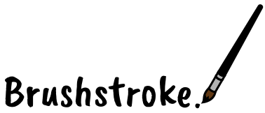
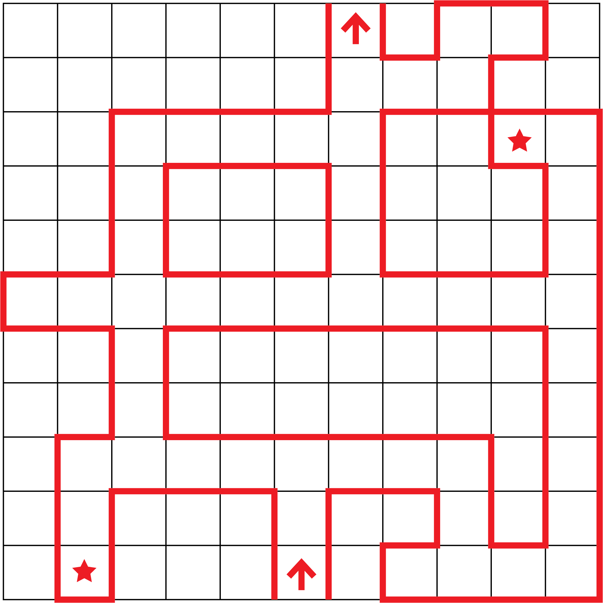
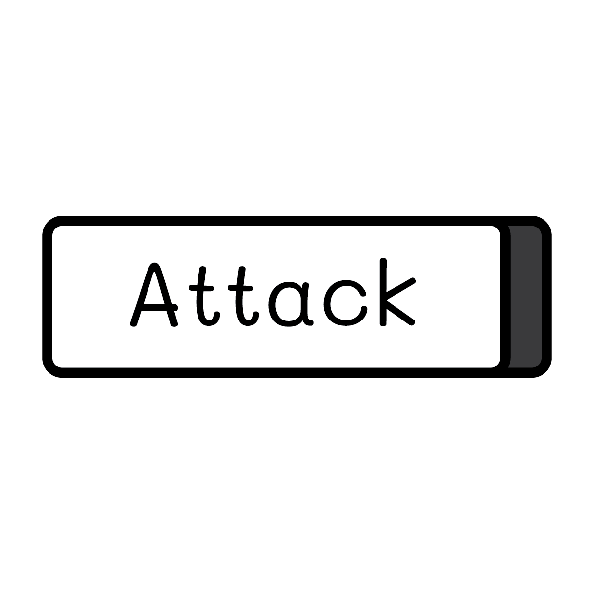
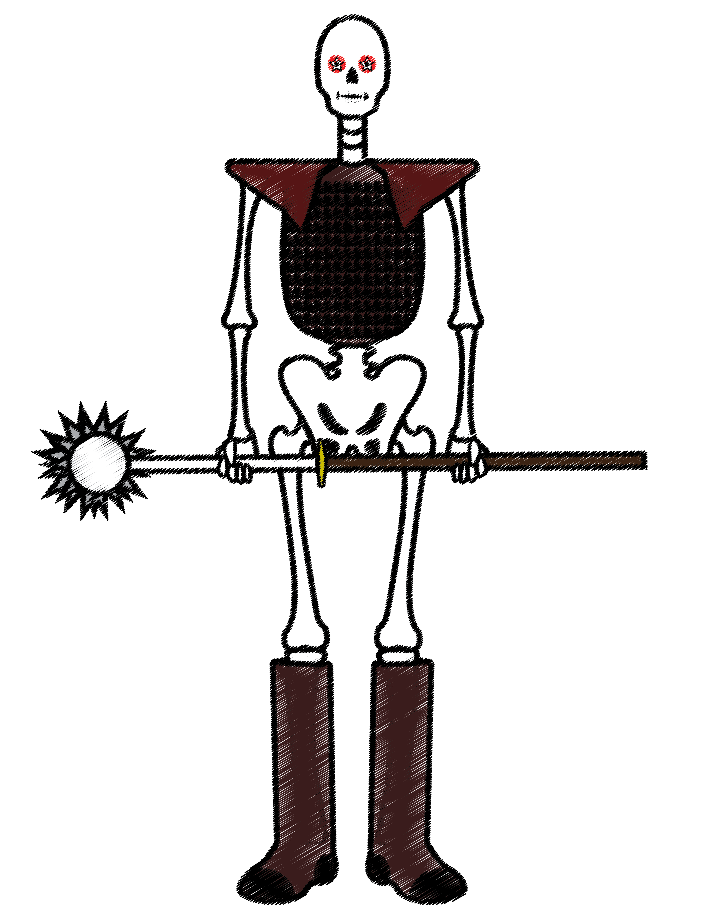
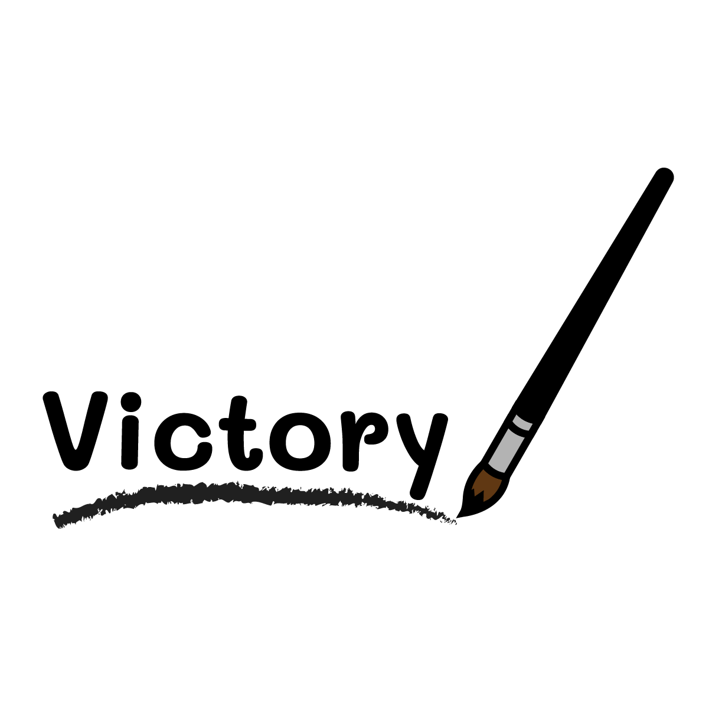

Brushstroke
Brushstroke is a 3D dungeon-crawling RPG, where you fight painted skeletons while traversing a labyrinthian dungeon.
Player Movement
I wanted to emulate older-style RPGs such as Phantasy Star and Persona 1 with the tile-based game movement. I also wanted the player to feel more immersed in the dungeon, so when the player isn't in a battle, there is no UI.
Player Movement Snippet
if (transform.position != stepForward) //if the player hasn't yet moved to the forward position... { if (!gameObject.GetComponent<AudioSource>().isPlaying) //if not playing a movement sound effect... { gameObject.GetComponent<AudioSource>().Play(); //...then play a movement sound effect. } transform.position = Vector3.MoveTowards(transform.position, stepForward, transitionSpeed * Time.deltaTime); //...then move the player towards the forward position. if (Physics.Raycast(transform.position, forwardDirection, out hit, 1) && hit.collider.tag == "nextSceneDoor") //if the player moves into a nextSceneDoor... { FadeInOutBlack.GetComponent<fadeInOutBlack>().fadeOut = true; //...then fade out the screen. } if (transform.position == stepForward && !Physics.Raycast(transform.position, forwardDirection, 10)) //if the player has reached the forward position and isn't in front of a wall... { BattleHandler.GetComponent<battleHandler>().randomBattleChance(); //...then give a chance for a random battle to occur. } } else if (transform.eulerAngles != newRotation && turningLeft == true) //else if the player is turning left but hasn't yet turned fully... { transform.eulerAngles = new Vector3(transform.eulerAngles.x, transform.eulerAngles.y - rotationSpeed * Time.deltaTime, transform.eulerAngles.z); //...turn towards the new rotated position. if (transform.eulerAngles.y <= newRotation.y || newRotation.y == 0 && transform.eulerAngles.y >= 270) //if the player is done rotating... { turningLeft = false; transform.eulerAngles = newRotation; //...make this else if untrue. } } else if (transform.eulerAngles != newRotation && turningRight == true) //else if the player is turning right but hasn't yet turned fully... { transform.eulerAngles = new Vector3(transform.eulerAngles.x, transform.eulerAngles.y + rotationSpeed * Time.deltaTime, transform.eulerAngles.z); //...turn towards the new rotated position. //if the player is done rotating...note: because of how Unity handles rotation, these || statements are to ensure the player actually stops rotating... if (transform.eulerAngles.y >= newRotation.y && newRotation.y != 0 || newRotation.y == 0 && transform.eulerAngles.y >= 359 || newRotation.y == 0 && transform.eulerAngles.y <= 90) { turningRight = false; transform.eulerAngles = newRotation; //...make this else if untrue. } }
Level Design
Since the levels are not randomly generated and are made by hand, each level is confined to an 11x11 tile grid. This gives enough room to make a ton of unique dungeons, while not being so absurdly huge that the player is constantly lost in them. There is no mini-map in the game, so while designing the levels the philosophy was to keep them big enough to be explored, but small enough to be traversed with ease.
The Battles
Every time the player moves a tile, there is a chance they get into a battle, with an additional random amount of enemies appearing. The player has three minions at their disposal -- each with their own unique stats and special abilities. Each combatant has a turn timer, and when their timer is up, they're allowed to make a move. If the player wins, they gain experience points to level up their minions, and have a chance of finding a healing item.
Battle Snippet (turn timer and health check)
if (PlayerInventory.GetComponent<inventory>().firstCurrentHP > 0) //if the first party member is still conscious... { partyOneTimerTime += PlayerInventory.GetComponent<inventory>().firstSpeed * Time.deltaTime; //...progress their turn timer... partyOneTimerSlider.GetComponent<Slider>().value = partyOneTimerTime; //...and update the slider component to reflect this change. } else //else if the first party member is knocked out... { PlayerInventory.GetComponent<inventory>().firstCurrentHP = 0; partyOneTimerTime = 0.0f; partyOneTimerSlider.GetComponent<Slider>().value = partyOneTimerTime; //...set their health and turn timer to 0. } if (PlayerInventory.GetComponent<inventory>().secondCurrentHP > 0) //if the second party member is still conscious... { partyTwoTimerTime += PlayerInventory.GetComponent<inventory>().secondSpeed * Time.deltaTime; //...progress their turn timer... partyTwoTimerSlider.GetComponent<Slider>().value = partyTwoTimerTime; //and update the slider component to reflect this change. } else //else if the second party member is knocked out... { PlayerInventory.GetComponent<inventory>().secondCurrentHP = 0; partyTwoTimerTime = 0.0f; partyTwoTimerSlider.GetComponent<Slider>().value = partyTwoTimerTime; //...set their health and turn timer to 0. } if (PlayerInventory.GetComponent<inventory>().thirdCurrentHP > 0) //if the third party member is still conscious... { partyThreeTimerTime += PlayerInventory.GetComponent<inventory>().thirdSpeed * Time.deltaTime; //...progress their turn timer... partyThreeTimerSlider.GetComponent<Slider>().value = partyThreeTimerTime; //...and update the slider component to reflect this change. } else //else if the third party member is knocked out... { PlayerInventory.GetComponent<inventory>().thirdCurrentHP = 0; partyThreeTimerTime = 0.0f; partyThreeTimerSlider.GetComponent<Slider>().value = partyThreeTimerTime; //...set their health and turn timer to 0. } //if the entire party is knocked out... if (PlayerInventory.GetComponent<inventory>().firstCurrentHP <= 0 && PlayerInventory.GetComponent<inventory>().secondCurrentHP <= 0 && PlayerInventory.GetComponent<inventory>().thirdCurrentHP <= 0) { BattleMusicPlayer.GetComponent<AudioSource>().Stop(); //...stop the battle music... gameOver = true; //...show the game over screen... inBattle = false; //...and stop the battle. }
UI and Graphics
  The UI and general graphical feel of the game was meant to be artistic-feeling, in order to have a consistent theme. The key symbols and menu buttons were designed mostly for usability, so that it's very clear what key to press and what pressing that key does. The enemies are designed to look a bit cartoonish with bold outlines, but still threatening enough to be seen as an enemy. The titles were designed to look as though the player, with a paintbrush, had declared their victory (or defeat) with bold brushstrokes.
Music and Sound Effects
All the sound effects are royalty-free, as I don't know how to make sound effects, and since this was a class project, I didn't have time to learn. However, playing and making music is a hobby of mine, so I had experience and knew how to make my own music. The goal of the music was to make it have an echo-y feeling, to help with immersing the player in a dungeon environment. The sound effects help to indicate inputs and what they do, as well as to notify the player of what is happening in a current battle. As these are mainly placeholders, in the future I hope to replace them with more stylistically-appropriate sound effects.